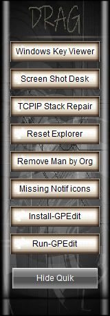
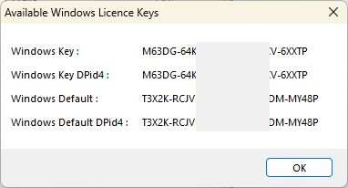
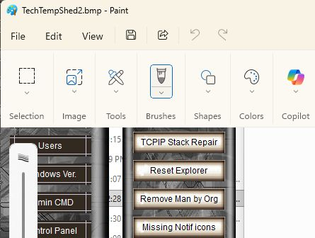
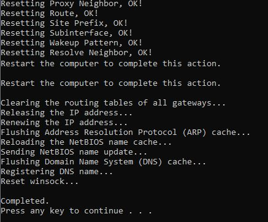
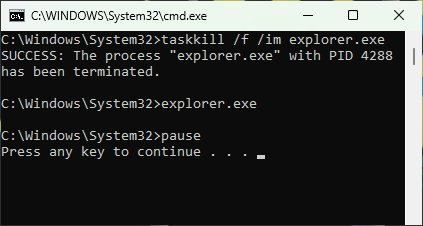
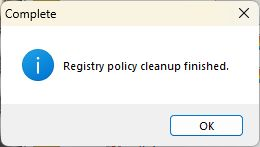
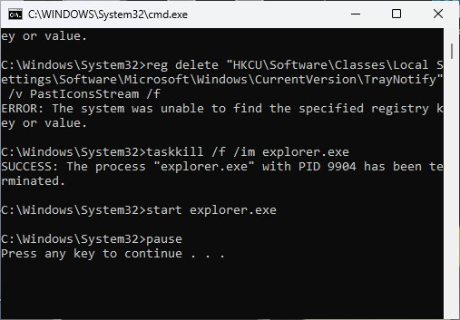
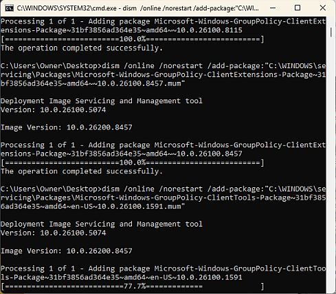
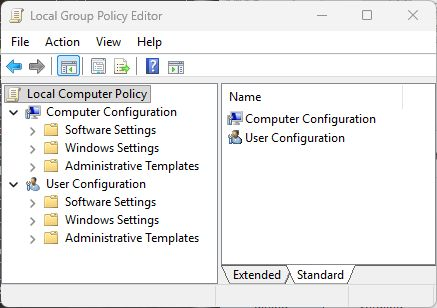

 |
Vics One app TechTool QuikFix Window1: Windows Key Viewer 2: Desktop Snapshot 3: TCP/IP Stack Repair 4: Reset Explorer 5: Remove Managed by Organization 6: Missing Notification Icons 7: Install GPEdit 8: Run GPEdit |
=========================================
Vics One app TechTool 1- Windows Key ViewerView Your Installed Windows Keys |
=========================================
| |
Vics One app TechTool 2- Desktop PictureSnaps Picture of Desktop |
=========================================
Vics One app TechTool 3- TCP/IP Stack Repairnetsh winsock reset— Resets the Winsock catalog back to defaults. netsh int ip reset — Rewrites the TCP/IP registry keys. ipconfig /release — Drops your current active IP address configuration. ipconfig /renew — Requests a brand new IP address from your router. ipconfig /flushdns— Flushes out corrupted domain name cache entries |
=========================================
Vics One app TechTool 4- Reset ExplorerRestart Windows Explorer because your desktop, taskbar, or system tray is frozen or lagging |
SCRIPT: - Reset Explorer:
taskkill /f /im explorer.exe explorer.exe pause
=========================================
Vics One app TechTool 5- Removes Managed by Org.The "Managed by your organization" message appears on personal devices when a linked school or work account, an overprotective antivirus, or a malware infection injects group policies into your system registry. |
=========================================
Vics One app TechTool 6- Missing Notification IconsCheck in system tray if some of the icons are blank or invisible you need this fix.Fix missing or blank notification icons in your Windows system tray, flush the cached taskbar states or reset your interface settings.  |
=========================================
Vics One app TechTool 7- Install GPEditInstalls Local Group Policy Editor |
=========================================
Vics One app TechTool 8- Run-GPEditOpens Windows Policy Editor Built-in Microsoft configuration tool used by administrators to manage advanced operating system settings, security behaviors, and user environments. It provides a graphical interface to modify policies that directly adjust underlying Windows Registry keys in a structured, safe manner. |
=========================================